пролив — пространство для уединения, состояния вдумчивости и эксперимента
причина
процесс
состояние
принципы пространства
манифест
вдумчивость
Для нас важно, чтобы вы могли провести время уединенно, без спешки в цифровом пространстве, где можно найти для себя возможность узнать новое или увидеть уже знакомое
эксперимент
Мы рассказываем о культуре чая, при этом не отнимаем у читателей возможность получить собственный опыт. Рецепт может помочь с выбором и ингредиентами, однако чай не против экспериментов
манифест
Мы живём в мире переизбытка, каждый день пропуская через себя огромный поток визуальной, аудиальной и тактильной информации. Порой бывает нелегко справиться с напором стимулов, получаемых из окружающей среды, хочется на время очистить голову. Во время церемонии вокруг человека создаётся силовое поле, которое не пропускает внешние триггеры. Вне зависимости от того, что происходит снаружи, внутри воображаемой чайной комнаты царит спокойствие и гармония